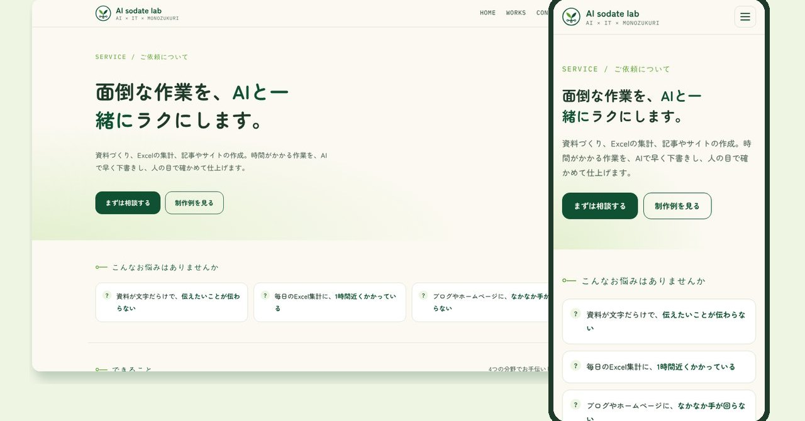
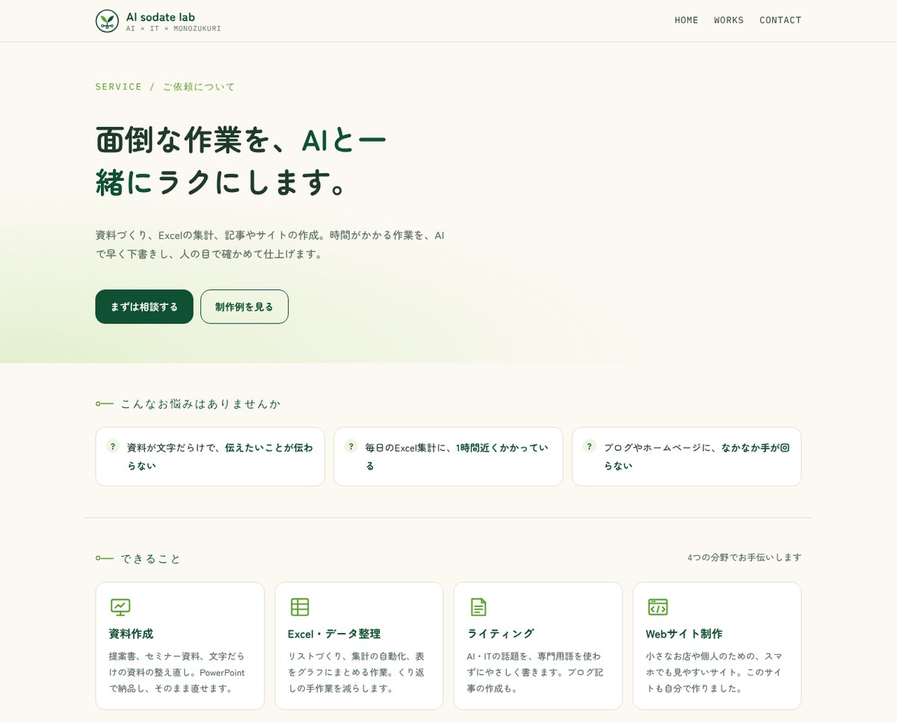
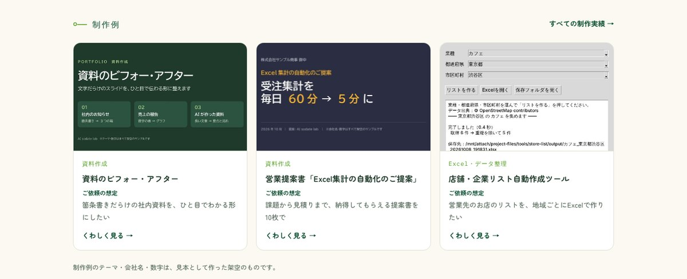
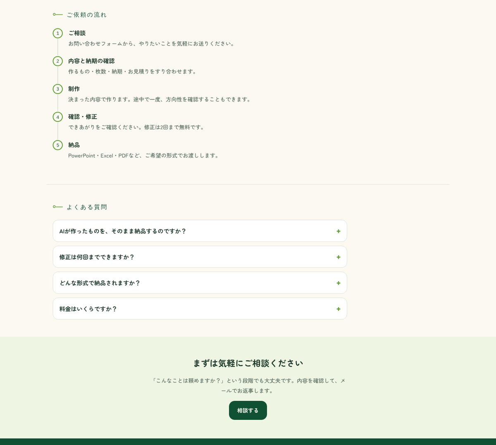
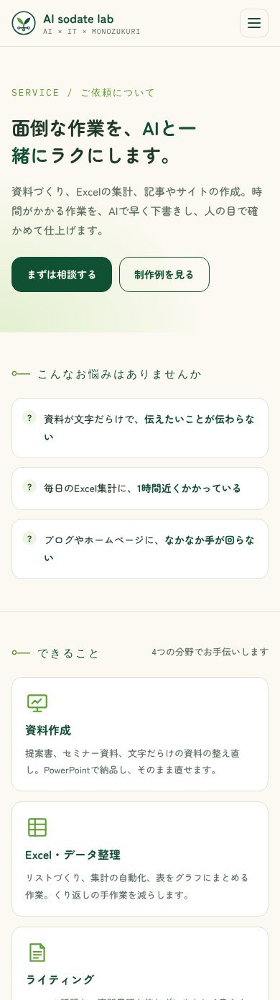

想定した依頼
「ホームページはあるけれど、何を頼めるのか、どう頼めばいいのかが伝わらない。問い合わせにつながる1ページがほしい」。このサイト自身の「ご依頼について」ページとして、実際に作って使っているものです。
作ったもの
読む人の気持ちの順番に合わせて、上から8つのブロックを並べました。
- ひと言で伝えるキャッチコピーと「相談する」ボタン
- こんなお悩みはありませんか（3つ）
- できること（4つの分野）
- 制作例（3点）
- 強み（3つ）
- ご依頼の流れ（5ステップ）
- よくある質問（開いて読める形）
- 最後のひと押しと「相談する」ボタン




工夫した点
- 読む人の順番で並べる：「悩み → できること → 実例 → 頼み方」の順にして、読み進めるうちに相談する理由がそろうようにしました。
- 相談ボタンを最初と最後に：すぐ相談したい人は最初のボタン、じっくり読んだ人は最後のボタンから、迷わず問い合わせできます。
- サイトの見た目とそろえる：色・文字・部品は今のサイトのものを使い、ページだけ浮かないようにしました。スマホでは自動で縦1列に並び替わります。
規模と制作時間
- 8ブロック・1ページ、PCとスマホの両方に対応
- 制作：構成案（8ブロック）づくりから確認画面まで 約10分（AIと一緒に作成し、PC幅・スマホ幅で表示を確認）
実際のページ
こんなご依頼にも対応できます
- お店やサービスを紹介する、1ページのLPを作りたい
- 今のホームページに、問い合わせにつながるページを足したい
- スマホで見ると崩れるページを直したい
注意
ページ内の制作例のテーマ・会社名・数字は、見本として作った架空のものです。